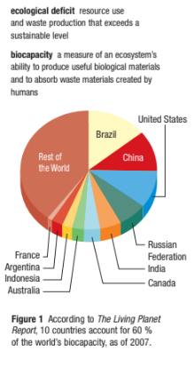

Callout
The rapid growth in the world population over the past two centuries has raised concerns that humans are beginning to overpopulate Earth and that Earth may not be able to sustain an ever-larger number of people. The demands of an increasing population increase the demands for natural resources, clean air, and water.
Responding to the demands of a rapidly growing population can challenge a country’s ability to manage its natural resources sustainably. For example, people may not be able to access clean, safe water because more and more households and industries are using increasing amounts of water.
Deforestation may occur as trees are cut to provide building materials or land for grazing and agriculture.
Desertification may occur as land that has been intensively farmed becomes depleted of its nutrients, causing once
fertile land to no longer be arable. The air may become more polluted as vehicular traffic increases, people use more energy, and the world continues to industrialize.
Many of Earth’s resources are renewable. However, these resources are renewable only as long as they are not overused or polluted.
Callout
Earth’s natural ecosystems provide all the species on the planet with food, water, shelter, and the ability to recycle naturally occurring wastes. However, resources are limited. There is only a certain amount of fresh water available. Photosynthesis only captures and stores a certain amount of carbon, and the rate of decomposition is limited by a variety of biotic and abiotic factors.
Demands for available resources vary from species to species and change over time. As populations increase in size, their demands for resources also increase. In addition, as the standard of living increases, the per capita consumption rate increases, putting a further drain on resources. Two growing concerns are causing many individuals, corporations, and governments to reassess their use of natural resources. First, many resources, notably metals and fossil fuels, are possibly running out. Second, pollution and the degradation and conversion of land are reducing the renewal of resources.
The carrying capacity of Earth for humans is estimated to be around 10 to 15 billion people. What happens if we exceed it? In general, when a population exceeds its carrying capacity, two things usually happen: mortality rates increase and birth rates decrease, usually because the ecosystem is becoming degraded.
According to the Global Footprint Network, we use the equivalent of 1.5 planets to provide the resources we use and to absorb our waste. This means that it now takes Earth one year and six months to regenerate what we use in one year.
Even conservative models suggest that if current population and consumption trends continue, we will need the equivalent of two Earths to support us by the middle of this century. If we continue turning resources into wastes faster than wastes can be turned back into resources, we could end up in an ecological deficit.
Different ecosystems vary in their capacity to meet human needs. Earth’s total biocapacity (its ability to produce biological materials that are useful to humans and absorb the wastes that are created by humans) is dependent on the available biologically productive areas of land and water.
Biocapacity is measured in units called global hectares a global hectare (gha) represents one hectare of average biological productivity and waste-absorbing capacity. One actual hectare of tropical rainforest, for example, has a high biocapacity (about 3 gha) because it is much more productive than the average hectare on Earth. One hectare of desert has a biocapacity of less than 1 gha.
Callout
Biocapacity is dependent on natural conditions. It is also dependent on how the land is used; for example, if it is used for farming or forestry. Worldwide, biocapacity is not evenly distributed. According to the Living Planet Report in 2007, 10 countries held about 60 % of the world’s biocapacity (Figure 1).

Callout
The expressions “global hectare per person” or “biocapacity per person” refer to the amount of biologically productive land and water that is available per person on the planet (Figure 2). If land is degraded, then more land is needed to support each person and the biocapacity of Earth goes down. If technologies increase our ability to produce food in a sustainable manner, then Earth’s biocapacity increases.
Callout
We need what nature provides, but how do we know how much we are using and how much we have available to use? The concept of the ecological footprint was developed at the University of British Columbia in 1990, and it is now used around the world to measure the human population’s demands on nature. It measures the land and water area that a human population requires to produce the resources it consumes and to absorb its carbon dioxide emissions, using current technology.
Callout
The 2010 Province of Ontario’s Ecological Footprint and Biocapacity Analysis states that, per capita, Ontario residents are placing some of the highest demands on the planet’s resources. With an average ecological footprint of 8.4 gha (global hectares) per person in 2005, only three of 150 countries with reported ecological footprint data have a higher average per-person ecological footprint.
In 2005, the average biocapacity in Ontario was 8.5 gha per person, just above the average Ontario ecological footprint. However, Ontario’s biocapacity is substantially lower than the Canadian average of 20.0 ha per person. Ontario enjoys the benefits of a per capita biocapacity that is four times the world average that is available per person. This resource-intense lifestyle is not sustainable. If our demand for resources, or ecological footprint, exceeds our biocapacity, there is an ecological deficit. Conversely, there is an ecological reserve if the biocapacity of a region exceeds its population’s footprint. Today, we are living in an ecological deficit.
If we continue to use resources in the same manner, we will experience collapsing fisheries, deforestation, depletion of freshwater sources, and increasing carbon dioxide emissions. It is time for individuals and institutions worldwide to recognize our ecological limits.
No one can predict the future of the human population with any certainty, since assumptions that are made when creating projections may change. Some projections suggested that the world population would double in 40 years if the human population growth continued at the same rate that it did in the last century.
However, studies show that our population is not growing as quickly as it did during much of the twentieth century. The United Nations Development Program (UNDP) has released data on human fertility (the total number of births per woman) for 162 countries. Compared with 1970 to 1975, 152 countries had lower human fertility from 2000 to 2005, three countries showed an increase in fertility, and seven countries showed no change (Table 1).
Callout
Note that, while Finland has had a consistent increase in total births per woman over the years, a country is considered to be growing only if its fertility rate exceeds 2.0. Also, note that there was a slight increase in the birth rate in four developed countries in the period from 2005 to 2010.
Concerned about the global population and its effect on Earth, world leaders adopted the United Nations Millennium Development Goals in 2000, committing their nations to achieve the following goals by 2015:
These goals can be achieved only if population growth is controlled. In 1994, the United Nations held an International Conference on Population and Development (ICPD), which set a target for global investment in family planning. As of 2004, the investment had fallen dramatically short of this target. Consequently, family planning information and devices (usually for fertility control) are not readily available in many of the lowest-income countries. In 1950, Sri Lanka and
Afghanistan had the same population. Sri Lanka began strong efforts to make family planning available in culturally acceptable ways. This did not happen in Afghanistan. By 2050, Afghanistan will have four times as many people as Sri Lanka.
Biodiversity, or the variety of life on Earth, is an important global issue. It is measured as the variety within species, the variety between species, and the variety of ecosystems. Humans, like all species, are dependent on the resources of Earth.
Species and ecosystems renew our needed resources in many ways. They maintain oxygen in the atmosphere, remove carbon dioxide from the air, filter and purify water, pollinate plants, decompose wastes, and transfer nutrients.
However, our demand for food, water, and energy puts thousands of other species and ecosystems at risk. For example, birdwatchers and ornithologists who have counted and monitored the behavior and activity of bird populations have observed that they are affected by the loss of habitats as cities and towns expand into adjoining land.
Birds also lose habitats when agricultural operations expand to increase productivity. Birds that make annual migrations from temperate areas of the world to tropical and subtropical areas must survive changes across their entire route of habitats, each of which is essential to their survival.
Callout
Drylands are arid, semi-arid, and sub-humid areas where precipitation is scarce and more or less unpredictable. Drylands cover approximately 41% of Earth’s land surface and are home to about 38% of the human population.
However, between 10 and 20 % of the drylands are subject to some form of severe land degradation, directly affecting the lives of at least 250 million people. Climate change, combined with increasing pressure on water resources for these people and their crops and animals, compounds the problems that confront them.
A changing climate will alter a country’s biodiversity. Scientists estimate that about 10 % of the world’s known species will be at an increasingly higher risk of extinction for every 1 °C rise in temperature.
In tropical regions, for example, vertebrate populations have declined by 60% in the last 40 years, according to the Living Planet Report. Much of this decline is due to changes in land
use and deforestation (Figure 3).
It also means changing our own lifestyle, the food we eat, and our use of energy. We must learn how to protect Earth’s ecosystems and resources while meeting our own needs.
The survival of countless species around the globe—including our own—depends on our stewardship of the planet.
Callout
How can we make a difference? There are many examples of ways that people are already making a difference. Green buildings are becoming more common in many countries. There are office buildings, factories, and schools that use natural light, recycle wastewater, are powered by solar energy, have recycled-content decor, and are built near public transportation.
City planners are designing sustainable neighborhoods, with services within walking distance of the homes, and incorporating vertical farming techniques by including sky farms in cities. E-books are increasingly taking the place of paper books, saving our trees. Power companies now offer alternatives to non-renewable resources. Solar panels, wind turbines, hydroelectricity, and green natural gas with net-zero carbon dioxide emissions are available.
Callout
Even car companies are making more hybrid models and all-electric vehicles to save or avoid the use of
gasoline and reduce greenhouse gas emissions. While these technologies are not yet widespread, they are more popular now than they were a decade ago, and this trend will likely continue.
It is up to us—as individuals, as local groups, and as a global community—to re-think how we live in order to make a difference. In the meantime, we must encourage others to do the same. Respect the rights of others. Use education and training to become informed. Learn to be objective and to examine and evaluate data or evidence.
We have seen that action is needed at both the species and habitat levels, but there is a propensity to focus more on the species level. The science of biology can be at the center of the movement to conserve biodiversity while guiding our efforts to achieve sustainable use of the resources we need. Conservation begins at home, whether protecting local habitats and species or protecting ecosystems.